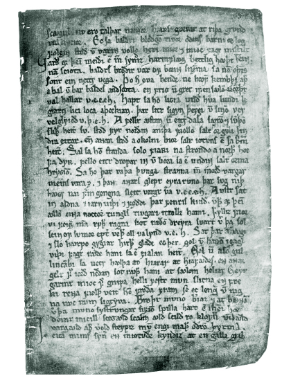
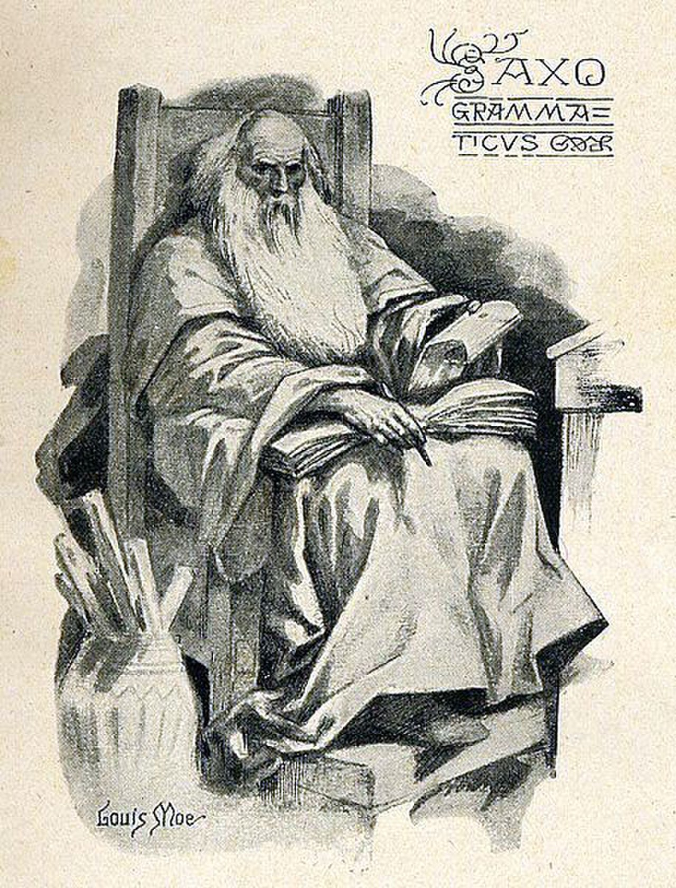
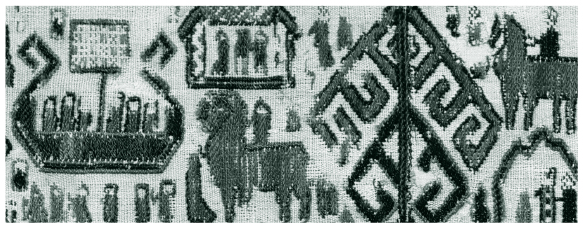
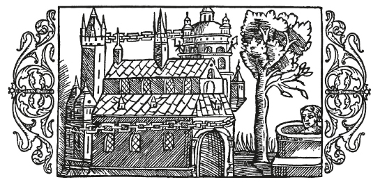

История
Древние германцы и скандинавы
Около 600 года до н. э. в Европе появились германские племена. Они пришли с юго-востока. До этого столетия скитались по миру. Как и другие индоарийцы, германцы сохранили память о прародине за полярным кругом. Оттуда они спустились вдоль Уральских гор на юг и расселились на большой территории – от современной Туркмении до нынешней Турции. Греческий историк Геродот, живший в V веке до н. э. – во времена переселения народов, считал их персами.
«Другие персидские племена – это панфиалеи, дерусиеи, германии, – писал он в своей «Истории». – Все упомянутые племена занимаются земледелием, прочие: жедаи, марды, дропики – кочевники».
Современный исследователь Владимир Щербаков приводит множество доказательств в пользу того, что предками германцев и скандинавов были асы, которые жили бок-о-бок с родственными им ванами – предками русов. В Старой Ниссе (Туркмения) находилась столица асов – Асгард.
В XIII веке в «Круге земном» писал исландский хронист Снорри Стурлусон: «К северу от Чёрного моря расположена Великая или Холодная Швеция (иначе – Скифия)… С севера, с гор за пределами заселённых мест, течёт по Швеции река, правильное название которой Танаис. Она называлась раньше Танаквисль или Ванаквисль (река Дон). Она впадает в Чёрное море. Местность у её устья называлось тогда Страной Ванов, или Жилищем Ванов. Эта река разделяет части света (континенты). Та, что к востоку, называется Азией, а та, что к западу – Европой. Страна в Азии к востоку от Танаквисля называется Страной Асов (отсюда и название части света – Азия), столица страны называлась Асгард. Правителем там был тот, кто звался Одином».
И далее о владениях индоевропейцев в Малой Азии: «Большой горный хребет тянется с северо-востока на юго-запад (Уральские горы, которые ныне считаются границей Европы и Азии. На Урале обнаружен священный город ариев Аркаим). Он отделяет Великую Швецию (Скифию) от других стран. Недалеко к югу от него расположена Страна Турок (полуостров Малая Азия). Там были у Одина большие владения».
Однажды Один в вещем сне увидел себя правителем далёкой северной страны и двинулся к месту своего предназначения. Но пошёл он не из Малой Азии, а из своей столицы Асгарда. Путь его лежал на запад черед Гардарики (Русь). Туда, однако, непрошенных гостей не пустили, и воинству асов пришлось сделать приличный крюк, опустившись на юг до северного Причерноморья (страну саксов, как её называет Стурлусон). А уже оттуда можно было с боями пробиваться через центральную Европу к Швезвигским болотам у Ютландии (ныне Дания). Затем – в Оденсе (в переводе означает «Святилище Одина») у берегов острова Фюн (Дания). После чего Один перебрался на Остров Зеландия, а с него, переправившись через узкий Зундский пролив – в Швецию, где обосновался в Старых Сигтунах.
Здесь Один прожил последние годы, заболел и умер. Согласно традиции жрецы Асов сожгли тело вождя на костре. Огонь, взревев, устремился вверх, а поднявшийся к самым небесам столп дыма, очертаниями напоминал священный ясень Иггдрасиль. Зрелище произвело столь сильное впечатление на зрителей, что они провозгласили Одина богом. В "Саге об Инглингах" Стурлусон – исландец и христианин, не без иронии по этому поводу замечает: «Шведы решили, что он вернулся в древний Асгард и будет там жить вечно. В Одина снова стали верить и к нему обращаться. Часто он являлся шведам перед большими битвами. Некоторым он даровал победу, а иных забирал с собой. И то и другое считалось благом».
После смерти Одина в новой северной родине – Малой Швецией, правили ваны (большинство из них оказалось в войске асов не по своей воле – они стали заложниками после битвы за Асгард). При них началось процветание прежде дикого края…»
Многое из выше приведённого текста может вызвать скептицизм и даже улыбку. Но упоминания о прародине скандинавских племён за полярным кругом, земле Альтланд, имеют под собой вполне обоснованную теорию.
Альтланд (или Гиперборея, как его именовали в античных источниках) мог предположительно существовать в Баренцевом море. Возможно, архипелаг Новая земля – осколок некогда развитой цивилизации.
Древнеримский учёный Плиний Старший в своей «Естественной истории» писал о гипербореях следующее:
«За этими (Рифейскими) горами, по ту сторону Аквилона, счастливый народ (если можно этому верить), который называется гиперборейцами, достигает весьма преклонных лет и прославлен чудесными легендами. Верят, что там находятся петли мира и крайние пределы обращения светил. Солнце светит там в течение полугода, и это только один день, когда солнце не скрывается (как о том думали бы несведущие) от весеннего равноденствия до осеннего, светила там восходят только однажды в год при летнем солнцестоянии, а заходят только при зимнем. Страна эта находится вся на солнце, с благодатным климатом и лишена всякого вредного ветра. Домами для этих жителей являются рощи, леса; культ Богов справляется отдельными людьми и всем обществом; там неизвестны раздоры и всякие болезни. Смерть приходит там только от пресыщения жизнью… Нельзя сомневаться в существовании этого народа ».
Альтланд (Гиперборею) населяли высокие светловолосые люди с голубыми глазами – асы. В результате тектонических подвижек Альтланд погиб. Исход асов (гипербореев) со своей прародины предположительно произошёл 2000 лет до Р.Х. Асы двигались в направлении Уральских гор.
Фризы, юты, игвеоны, иствеоны, населявшие северо-западную Европу, территорию Дании, Голландии и северной Германии, так называемые прогерманские племена, сохранили предания о земле Альтланд. Если тщательно изучить книгу Германа Вирта «Хроника Ура Линда»[1], которая является переводом древнефризкой рукописи, то многое становится ясным.
В древнефризких манускриптах упоминается также Священная земля Туле, предположительно существовавший остров в Северном море. Примерно в IV–III веках до н. э. произошли сильные изменения береговой линии, омываемой Северным морем, в результате которых обширные земли скрылись под водой. Остров Туле, Святая земля, был затоплен водами Атлантики.
Что касается асов, ушедших из Альтланда в направлении уральских гор, то в античных трудах действительно упоминается племя светловолосых людей, граничащих со скифами.
Возможно, заповедный комплекс Аркаим (о котором упоминается выше) или как его ещё называют «Страна городов» и есть наследие асов, дошедших до нас через века.
До сих пор остаётся загадкой: почему люди покинули Аркаим и прилегающие к нему многочисленные города (предположительно их число достигало 40–60). Возможно, разгадкой может стать предание, в котором говорится, что Один (вполне реальная личность) увидел во сне Альтланд, страну предков, затем ему было знамение – вести свой народ на север.
Многочисленные скифы и затем, пришедшие из Малой Азии, племена сарматов (племена родственные скифам), а также предки тюркских племён могли вытеснить асов с их территории обитания. И это могло стать одной из причин, по которой Один стремился на север.
Тур Хейердал, учёный-антрополог, некогда высказал предположение, что асы жили в Причерноморье и покинули свои земли морским путём. Поводом тому послужили находки, сделанные на территории Ростова-на-Дону (древний Танаис).
На самом деле, не известно были ли далёкие предки викингов искусными мореходами. К примеру, племена киммерийцев, обладавших высокоразвитой культурой и поживающих в Причерноморье, избегали морских путешествий, предпочитая земледелие и скотоводство.
Согласно из одной дошедших из нас легенд, Один приказал соорудить корабль (возможно, их было несколько) и в сопровождении верных людей отправился на поиски северных земель. Зачем с боями прорываться через населённые территории Европы, когда можно беспрепятственно совершить морское путешествие.
В Асгарде, столице асов, Один оставил соправителями своих братьев Ве и Вили. Возможно, по этой причине братья практически не фигурируют в скандинавском эпосе.
Корабли Одина достигли Северного моря, а именно ещё существовавшего острова Туле. И уже оттуда асы начали свою экспансию, направленную на земли Скандинавии, малонаселённые в те далёкие времена (примерно V–VI в.в. до н. э.).
Часть асов - те, что остались на Урале (или за Уралом) так не покинули Асгард и Аркаим. Возможно, они перемешались с сарматами или скифами, с которыми какое-то время уживались достаточно мирно.
После скифов остались захоронения, в которых археологи находят множество золотых изделий и украшений. Скифские мужчины и женщины явно питали слабость к золоту, но добывать его не умели и не могли. Ибо на территории их обитания не было золотых месторождений.
Месторождения располагались на Урале, подвластном асам. Если вспомнить о мифологических цвергах, которые добывали золото и могли изготовить прекрасное ожерелье для Фрейи, или скажем, механического золотого кабана, то само собой напрашивается вывод: асы добывали золото, продавали его скифам (или выменивали на лошадей, скотину и т. д.), те же изготавливали из него украшения.
Итак, Один, его сыновья и жена Фригг (в некоторых источниках Фрейя также упоминается, как жена, в других же, – как сестра) отправились на Северные земли и поселились на острове Туле.
Асы активно контактировали с фризами и ютами, жившими на побережье Северного моря, возможно, – с кельтами (территория Франции, Англии). Возможно, асы заключали с ними браки.
В рунических памятниках культуры, в частности «Хронике Ура Линда» упоминается об не только об острове Туле, который поглотило море, но и о некой крепости Вальхаллагара, предположительно расположенной на Шетландских островах. В скандинавских же мифах Вальхалла ассоциируется с загробным миром, в который попадали воины, погибшие в бою с оружием в руках.
В той же «Хронике» Фрейя упоминается, как прародительница древних фризов. Согласно фризской мифологии Небесный Бог Вральда женился на Итсхе, Богине земли, и родились у них три дочери: Фрейя, давшая жизнь фризам; Финда, давшая жизнь финнам и кельтам; и Линда, давшая жизнь южным племенам с тёмной кожей.
Также в рунической «Хронике» неоднократно упоминается Альтланд, который погиб в результате катастрофы. Вот сокращённый отрывок:
«Всё лето солнце было сокрыто облаками, как если бы оно не хотело видеть земли. Ветер отдыхал в своей пещере, туман и облака, подобно столпам стояли над домами и болотами. Воздух поэтому был сумеречным и мутным, а в сердце людей не было ни бодрости, ни радости. Посреди этой тишины земля начала вдруг трястись, как если бы она была при смерти. Извергая огонь, расщепились горы, другие горы провалились вниз, а там где прежде были поля, возникли скалистые ущелья и горные хребты. Альтланд, названный так моряками, потонул, и дикая ненависть долго ещё клубилась над горами и долами, пока не сокрылась в пучине морской. Многих людей засыпало землёй, а многих, которые убереглись от огня, смыло затем водой. Горы низвергали пламя… Леса горели один за другим, а ветер, отсюда произошедший надул в наши края множество пепла. Это преградило течение рек, в устьях которых возникли острова песка, на которых топталась уцелевшая живность. Земля жила так в течение трёх лет. Когда же ей стало лучше, можно было лицезреть последствия катастрофы. Многие страны потонули, другие же поднялись из моря…»
Прочитав описание древней катастрофы можно сделать вывод: Альтланд (будь то остров или полуостров, что вероятнее) утонул, но до того момента между ним и континентом существовала связь.
Если гипотетически предположить, что Альтланд находился в районе Белого (где найдено множество свидетельств древней развитой цивилизации) или Баренцева морей, то связь с Северной Европой могла осуществляться как сухопутном или морским путём.
Возможно, далёкие предки фризов и ютов ещё раньше покинули Альтланд (перенаселение, несогласие с политикой правящего класса и т. д.) отсюда и культ Белых жриц (о них неоднократно упоминается в «Хрониках»), которые поддерживали в лампах священный огонь прародины.
Древние фризы были хорошими мореплавателями, их корабли вполне могли обогнуть Скандинавский полуостров и достичь прародины Альтланда. Отсюда можно объяснить интерес к судьбе прародины и появившееся описание катастрофы в «Хрониках Ура Линды».
Возвращение Одина на Северные земли не случайно. В памяти асов (гипербореев) хранились знания о том, что часть племени покинуло Альтланд и ушло на другие земли. Вероятно, Один знал, на какие именно земли некогда ушли его сородичи.
Покинув Танаис (будем считать, что именно оттуда асы отправились покорять новые земли) он рассчитывал встретить племя близкое по духу и культуре. Насколько ему это удалось можно увидеть из мифологии, в которой он стал главой религиозного пантеона, а его сыновья и жена – богами.
Если вернуться несколько назад, то возникает вполне обоснованный вопрос: если асы жили в районе южного Урала (об светловолосых племенах существуют упоминания в античных источниках), то, как они смогли беспрепятственно достичь Танаиса, минуя территории скифов?
Ответ напрашивается сам собой: благодаря золоту, которое так почитали скифы, но не умели добывать. Многочисленные скифы могли бы захватить приуральские земли асов и даже разграбить их, но золота бы у них от этого не прибавилось.
«Хроники Ура Линда» – древний памятник культуры, чудом дошедший до наших времён. Он неоднократно дополнялся различными людьми и переписывался. Хронология книги могла нарушиться. Она может иметь «провисания» в несколько веков. Вероятно, в эти периоды ей не уделяли должного внимания. Поэтому прибытие кораблей Одина на остров Туле, а это примерно V–VI в.в. до н. э., не зафиксировано в «Хрониках».
Рукопись также могла сильно пострадать в III веке до Р.Х., когда Северное море затопило прибрежные земли фризов и ютов.
Два вида норвежской поэзии
Памятник Снорри Стурлусону, исландскому учёному,
политику и поэту 18 века,
возле
его дома
в Рейкхольте

Исландский ученый Снорри Стурлусон
Снорри Стурлусон (1179–1241) происходил из знаменитой исландской семьи и активно участвовал в бурных политических событиях в Исландии и Норвегии. Он составил трактат о поэтике, известный как «Младшая Эдда» или «Прозаическая Эдда», который состоит из четырех частей: «Пролога», основного раздела под названием Gylfaginning, или «Видение Гюльви», раздела Sk?ldskaparm?l («Язык поэзии») – объяснения метафорических фигур, известных как кеннинги, а также длинной поэмы, иллюстрирующей разные примеры поэтической метрики H?ttatal («Перечень размеров»). Снорри был убит в подвале своего дома в Рейкхольте (или Рейкьяхольте), в Исландии, посланниками норвежского короля. Говорят, его последние слова были такими: «Не бейте!»
Никто точно не знает, что означает слово «эдда»; такое название было дано трактату Снорри в одной из самых ранних рукописей. Одно из значений – «прабабушка». Оно может указывать на то, что мифологическое знание древнее и тесно связано с женщинами. В Исландии XIV века это слово использовалось также для обозначения понятия, близкого к слову «поэтика». Существовало два вида древнескандинавской поэзии. Один – скальдическая поэзия – был выстроен сложно: эта поэзия использовала систему метафорических загадок, известных как кеннинги. В простейшей форме это пара слов, указывающих на общее ассоциативное значение, например: «кузнец мысли» означало «поэт», «луч альвов (эльфов)» – «солнце». Но многие кеннинги гораздо сложнее и загадочнее, для их расшифровки нужно знание мифологии. Так, чтобы понять значение метафоры farmr arma Gunnlaðar («бремя рук Гуннлёд»), нам надо знать, что бог Один однажды соблазнил Гуннлёд, дочь великана, чтобы добыть мед поэзии для богов и людей. Описывая так Одина, вместо того чтобы назвать его, например, «повешенным богом», скандинавы создают ассоциации с богом-соблазнителем, который добывает важные культурные ценности для богов и людей, а не со страдающим персонажем, повесившим себя на мировом древе, чтобы понять значение рун. При этом жертва через повешение считалась лучшим способом угодить Одину. В текстах скальдической поэзии зафиксировано очень немного мифов; что примечательно, в их числе рассказы о деяниях Тора, а в основном связь этой формы с мифами и легендами выражается только в таинственных отсылках кеннингов.
Другая разновидность древнескандинавской поэзии называется эддической. В ней используются более простые аллитерации и стихотворные формы, распространенные и в других германских языках, таких как древнеанглийский и древневерхненемецкий. Термин «эддическая» присвоен этому виду поэзии в силу того, что в ней пересказаны многие предания из числа ставших основой мифологических версий Снорри в его «Эдде». Многие фрагменты такой метрической поэзии сохранились в единственной рукописи под шифром GKS2365 4to Института исландских исследований имени Арни Магнуссона. Исландский епископ Бриньольвюр Свейнссон преподнес ее королю Дании в 1662 году, поэтому она известна как «Королевский кодекс» («Codex Regius»). Хотя рукопись была написана в Исландии около 1270 года, многие поэмы и сведения, вошедшие в нее, были уже известны Снорри, писавшему лет на сорок раньше. Вероятно, существовало некое ранее написанное собрание мифологической и героической поэзии, которым он мог воспользоваться. Почти все поэтические произведения, которые послужили ему источником, присутствуют в кодексе, но есть и несколько мифологических эддических поэм, которых в нем не обнаружено. Среди них «Сны Бальдра», предвещающие смерть бога Бальдра, а также «Песнь о Хюндле» – поэма, раскрывающая немало мифологической информации о великанском родословии одного из любимых героев богини Фрейи, и «Песнь о Риге» – она объясняет происхождение сословий. Другие памятники эддической поэзии повествуют о скандинавских героях и пересказаны в прозаических сказаниях (сагах) о героической эпохе викингов. Такие тексты называют сагами о древних временах (fornaldarsögur).
«Королевский кодекс», содержащий некоторые стихи из «Прорицания вёльвы»
Исландские предания
Саксон рассказывает, как исландцы запоминали и сохраняли героическую традицию. Это объясняет, почему два главных труда по норвежской мифологии – «Старшая Эдда» и «Младшая Эдда» – были записаны именно на этом острове в Северной Атлантике. Исландию в IX века освоили переселенцы из Норвегии. Миф о происхождении исландцев гласит, что они были потомками вольной знати, не покорившейся тирании короля Харальда. Другие скандинавы из англо-скандинавских колоний на Британских островах тоже перебрались в новые поселения, а рабов завезли из кельтских регионов. Древние предания из скандинавской прародины, должно быть, перекочевали в Исландию на длинных ладьях переселенцев, и их постоянно пересказывали и разыгрывали в маленьких, крытых торфом сельских хижинах, где собирались местные жители долгими и темными зимними вечерами. Так Исландия на века стала центром сохранения знаний о языческом прошлом.
Первый датский историк Саксон Грамматик
Почти все средневековые упоминания древнескандинавских мифов и легенд восходят к Исландии и исландскому языку, за  одним важным исключением: это «Деяния данов» (или «История датчан») – объемное сочинение на латыни датского монаха Саксона Грамматика, жившего примерно в 1150–1220 годах. Его прозвище означало «ученый», «образованный». В предисловии к своему труду Саксон рассказывает о дохристианском прошлом, когда даны «выцарапывали буквы собственного языка на скалах и камнях, чтобы поведать о деяниях предков, прославленных в песнях на их материнском наречии». Саксон также упоминает, что современные ему исландцы великолепно рассказывали традиционные предания, и он использовал их в своей книге. Как и Снорри, Саксон характеризует богов и героев как людей хитроумных и склонных к предательству, обитавших в Дании в доисторическом прошлом. Одина он тоже называет исключительно умным человеком: «…в него верят в Европе как в бога, хотя и ложного». Несмотря на скептицизм, Саксон поведал нам множество сказаний на самые разные темы; его текст особенно полезен как источник сведений о важных скандинавских героях Старкаде и Рагнаре Лодброке (Кожаные Штаны)
Устные предания и литература
Снорри вполне мог располагать небольшим собранием рукописей эддической поэзии, когда работал над «Младшей Эддой». Но сейчас легко недооценить огромный объем материала, который средневековые люди хранили в своей памяти. Снорри, без сомнения, помнил немало стихов – скальдических и эддических. Из них и, вероятно, из прозаических пересказов он брал информацию, необходимую для создания «Эдды». В трудах Снорри образцы древнескандинавской мифологии зафиксированы для следующих поколений: это великолепное письменное обобщение изменчивого, многообразного мира историй, вошедших в книгу. Но «оригинальную», «изначальную» версию мифа найти нельзя; невозможно установить, кто первым рассказал ту или иную историю. Каждый пересказ что-то менял в понимании мифа, его структуре и смысле. Каждая версия открывает новые стороны мифологического сознания и передает контексты, делающие миф релевантным определенной культуре. И это касается как поэм, так и кеннингов, аллюзий и даже изображений на камне или резьбы по дереву, живописи, текстиля и керамики.
в древнескандинавской мифологии есть несколько объяснений происхождения каждого мира, и споры о «подлинном» и «оригинальном» варианте не дадут ничего. Так же и версии египетских мифов разнятся на всем протяжении Нила. Древнескандинавские предания были культурной собственностью потомков викингов, расселившихся по северным землям. В так называемой диаспоре викингов народы, говорившие на скандинавских языках, проживали в Скандинавии, Британии, Нормандии и на островах Северной Атлантики, прежде всего в Исландии, а также на Фарерском, Оркнейском и Шетландском архипелагах. Позже они колонизировали южную Гренландию и основали поселения в Северной Америке. Скандинавы продвигались по Днепру до Черного моря и служили в варяжской страже императоров в Константинополе; они даже стали основателями русских княжеств.
Такая обширная география означала, что единообразие исключено, не существует догматических версий мифов, признанных всеми. Догма ассоциируется с религиями Писания: иудаизмом, христианством и исламом, где вера в священные тексты предполагает набор канонических версий, которые обретают статус истинных (даже если интерпретации тех или иных событий разнятся). От полуострова Ютландия в Дании до северных границ Лапландии, на запад до Дублина эпохи викингов, на юг до Нормандии, на восток до Константинополя народы, говорившие на скандинавских языках, знали и использовали свои сказания для объяснения важных метафизических вопросов, на которые и призвана отвечать мифология.
В результате переселения, смены территориальных и языковых границ легенды меняются. Если мы сравним версию истории Сигурда/Зигфрида, представленную в австро-германской «Песне о Нибелунгах», которая зафиксирована около 1200 года, со скандинавскими поэтическими и прозаическими вариантами, о которых пойдет речь в главе 4, мы увидим, что отношения между главными героями перестроились. В южной версии внимание сосредоточено на мести сестры братьям за убийство ее мужа. В скандинавских она прощает братьев и мстит второму мужу за их убийство. Эти различия много говорят об изменении культурных норм; предания исследуют проблему верности сестры своему роду после того, как она выходит замуж. Мифы и легенды изменчивы, подвижны; если память об их культурной роли еще жива, она может быть зафиксирована на письме. А утрачивая смысл, они просто исчезают. Вероятно, множество сказаний о богах и героях, не вписавшихся в новый уклад жизни скандинавских народов, были потеряны навсегда.
Места и объекты
Некоторые ключи к утраченным сокровищам мифологии можно найти в кратких упоминаниях дохристианского периода, археологических находках, особенно в важной для древнескандинавского ареала каменной скульптуре. Многие древнескандинавские религиозные ритуалы, судя по всему, выполнялись под открытым небом, но существовали и храмы. Есть сведения, восходящие к 1070-м годам и записанные ученым Адамом Бременским, о большом храме в Упсале, в центре Швеции. Христианство утвердилось там гораздо позже, чем в Норвегии и Исландии, и Упсала была центром всех видов деятельности: политической, административной, религиозной и правовой. По свидетельству Адама, в храме Упсалы были установлены статуи Тора, Вотана и Фрикко (Тора, Одина и Фрейра), сидящих на троне. Центральное место занимал Тор, а два других божества сидели по бокам от него. Возле храма росло огромное вечнозеленое дерево, под которым находился колодец: в нем топили приносимых в жертву. Иногда жертв подвешивали на деревьях – обычно собак, коней и людей. Как уже упоминалось, мифы об Одине подчеркивали важность повешения как ключевой формы подношения жизни в дар.
Некоторые ключи к утраченным сокровищам мифологии можно найти в кратких упоминаниях дохристианского периода, археологических находках, особенно в важной для древнескандинавского ареала каменной скульптуре. Многие древнескандинавские религиозные ритуалы, судя по всему, выполнялись под открытым небом, но существовали и храмы. Есть сведения, восходящие к 1070-м годам и записанные ученым Адамом Бременским, о большом храме в Упсале, в центре Швеции. Христианство утвердилось там гораздо позже, чем в Норвегии и Исландии, и Упсала была центром всех видов деятельности: политической, административной, религиозной и правовой. По свидетельству Адама, в храме Упсалы были установлены статуи Тора, Вотана и Фрикко (Тора, Одина и Фрейра), сидящих на троне. Центральное место занимал Тор, а два других божества сидели по бокам от него. Возле храма росло огромное вечнозеленое дерево, под которым находился колодец: в нем топили приносимых в жертву. Иногда жертв подвешивали на деревьях – обычно собак, коней и людей. Как уже упоминалось, мифы об Одине подчеркивали важность повешения как ключевой формы подношения жизни в дар.
Захоронение корабля в Осеберге
В 1903 году фермер из провинции Вестфолл, с юга Норвегии, обнаружил часть корабля, когда вскапывал поле. Следующим летом археологи из Университета Осло провели раскопки и извлекли огромную, украшенную резьбой ладью 21,5 метра в длину и пять метров в ширину. Корабль был изготовлен из дуба около 820 года н. э. и рассчитан на тридцать гребцов. В 834 году его вытащили на сушу и использовали для погребения двух явно знатных дам. Одной было около семидесяти – восьмидесяти лет, другой, вероятно, около пятидесяти. Они лежали вместе на кровати в великолепно украшенном домике, установленном позади мачты. Погребальная камера была выстелена роскошными коврами и богато обставлена мебелью, там найдены одежда, обувь, гребни, сани и изящно украшенное ведерко; все это разместили вокруг женщин. Обнаружены были и скелеты пятнадцати лошадей, шести собак и двух мелких коров. Поверх погребения был насыпан курган, но в позднее Средневековье его потревожили и, судя по всему, украли найденные металлические предметы. Более крупные и тяжелые ценные объекты остались на месте. Предполагают, что старшая из женщин могла быть королевой. Корабль из Осеберга, а также два других подобных ему можно увидеть в Музее кораблей викингов в Осло.Археологические находки также помогают нам лучше понять мир северной мифологии, дают представление о том, какими были оружие, щиты, дома, корабли, упоминаемые в сказаниях. Такие объекты расширяют границы воображения и помогают увидеть миры богов и героев. Вещи, найденные в погребениях, дают повод утверждать, что некоторые люди практиковали магию и применяли в ритуалах загадочные предметы. Описания погребения в корабле встречаются в преданиях, но обычно суда с покойниками сжигали или отправляли в море. Такие церемонии не оставляют следов, однако корабль из Осеберга подтверждает рассказы о том, что высокорожденные мужчины и женщины могли удостоиться чести погребения на судне.
Наиболее важны для подтверждения и иллюстрации мифов и легенд Севера каменные скульптуры эпохи викингов: картинные камни и трехмерные высеченные из камня изображения героев и сверхъестественных существ. Они широко представлены на островах викингов, например на Мэне и Готланде (в Балтийском море между Швецией и Финляндией), которые долгое время служили торговыми перекрестками северных морей. На Готланде сохранилось 475 картинных камней с резными изображениями мифологических сцен. На них можно опознать Одина на восьминогом коне Слейпнире, эпизоды из легенды о кузнеце Вёлунде, фрагменты сказаний о Сигурде.
Ранний разрисованный камень с острова Готланд
Отличный экземпляр картинного камня был найден в Аустерсе, в приходе Хангвар на острове Готланд; он датируется 400–600 годами н. э. На камне изображено многоногое чудовище и человек, видимо вкладывающий руки в пасть монстру, по крайней мере хватающий его за нижнюю челюсть. Эту сцену сравнивают с эпизодом из истории Тюра, потерявшего руку при нападении космического волка Фенрира, но требуется немало воображения, чтобы опознать в этой странной многоножке воплощение зверя, которому в конце времен предстоит проглотить Одина.Иногда, как в случае с восьминогим конем Одина или богом Тором, который ловит морского змея Мидгарда на наживку из бычьей головы, в изображении есть настолько яркая деталь, что сцену невозможно спутать с какой-то другой. Так мы связываем мифы и легенды с каменными скульптурами по всему миру викингов. В каждой общине была своя традиция изложения преданий, но едва ли где-то она оказалась более поразительной, чем на острове Мэн. Там легендарные образы скандинавских мифов вырезали на крестах, словно вели диалог с христианской верой. Мотивы из преданий о Сигурде Драконоборце отзывались в сражении архангела Михаила с драконом, о котором идет речь в Откровении Иоанна Богослова. Смерть Одина, проглоченного волком Фенриром в момент Рагнарёка, изображалась на поперечной перекладине креста Торвальда (по имени резчика, который оставил на нем свое имя, написанное рунами) в церкви поселка Андреас на острове Мэн. Образ составляет резкий контраст Христу, Который, в отличие от Всеотца, воскресает после смерти. История Сигурда была изображена на камнях и предметах из таких дальних уголков мира викингов, как Поволжье, а знаменитый камень из Рамсунда найден в Швеции. Далее мы увидим, как эти образы сочетаются с письменными источниками.
Ученые находят все больше мелких металлических предметов, в которых можно четко распознать фигуры северных богов. Например, недавно при раскопках найдено изображение, получившее название «Один из Лейре», где бог показан в облике вооруженной женщины (валькирии), сидящей на троне с двумя воронами по бокам; его нашли в местечке Хорбю в Дании. Эта фигурка занимает достойное место рядом с известным изображением Тора из Эйрарланда в Исландии и маленькой фигуркой с большим фаллосом из Рэллинге в Швеции (считается, что это бог Фрейр). Взаимодействие между археологией, мифами и легендами динамично, и новые открытия меняют наши представления о прошлом.
Другие германские традиции
Интерпретируя скандинавские мифы, мы можем сравнить их с германскими преданиями раннего Средневековья. Англосаксы почитали богов с именами, напоминающими норвежских божеств: Тиу, Воден, Тунор, Фридж. От них произошли английские названия дней недели (Tuesday, Wednesday, Thursday, Friday), и они похожи на скандинавские: Тюр, Один, Тор и Фригг. В древнеанглийской литературе крайне мало упоминаний о богах; один пример можно найти в так называемых гномических стихах, то есть в стихотворных мудрых изречениях, когда покровительство Христа противопоставляется вздорности «Водена, изготовителя идолов». Другой пример есть в «Заговоре девяти трав», где Воден поражает змея «с девятью отростками». Немногочисленные уцелевшие тексты на древневерхненемецком включают несколько заговоров, где упоминаются боги со знакомыми именами, схожими с именами богов древнескандинавского пантеона.
По сравнению с развернутыми объяснениями Снорри в «Младшей Эдде» или логичным изложением мифологических мотивов в эддической поэзии эти фрагменты у соседних культур кажутся поразительно незначительными. Англосаксонская церковь не стремилась к сохранению дохристианских верований, и ее долгая монополия в письменной культуре означала полную утрату целого корпуса сказаний о языческом прошлом. Мифы канули в небытие и на старой родине англосаксов, в Германии: миссионеры, прибывавшие туда с Британских островов, занимались спасением душ и уничтожением языческих святилищ. Героические сказания в обеих языковых зонах уцелели чуть лучше, и мы имеем представление о древнеанглийском эпосе «Беовульф» и поэме «Деор», немецких «Нибелунгах» и можем опираться на них, говоря о Скандинавии.